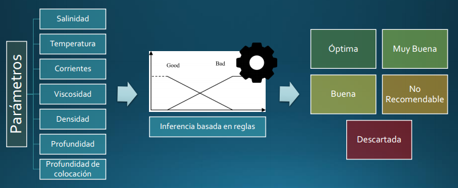
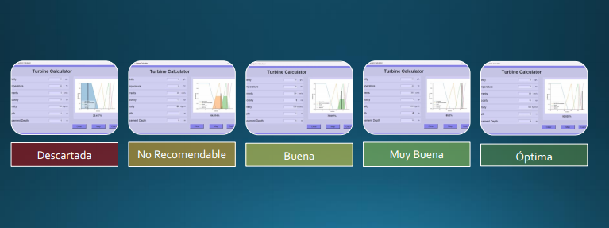

SECEM XVI
Universidad de Huelva
AI-Census
December 2023
Beyond phototrapping: the role of artificial intelligence in the transformation of images into data. Options, challenges and solutions


Passionate about AI, Deep Learning and Data Analysis
for Ecology and Conservation.
The usable energy of marine currents is one of the alternatives for clean and sustainable that can be explored with greater depth and rigor to address the problem current energy [1]. This work describes the design, implementation and development process. of a software developed to select the characteristics of the turbine to be placed in an environment aquatic affected by marine currents. Based on the hydrodynamic parameters and conditions of the study area (current speed, water depth, water temperature, salinity) is possible to estimate the power generated and the corresponding performance that different types of turbines according to different operating regimes [2,3]. For this, the computer program developed uses a Fuzzy Logic methodology that allows decisions to be made depending on intermediate values taken by the hydrodynamic variables that characterize the study area. The rules heuristics used by the developed system are learned using a database for the calibration. This computer application (Figure 1) serves as a support for decision making. in the initial stages of a project to select and install turbines for the use of the energy from ocean currents.

